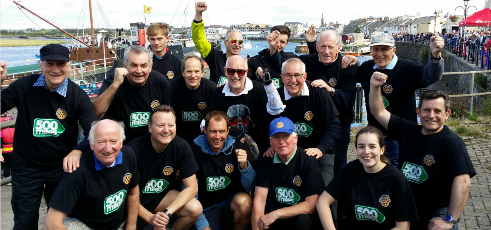
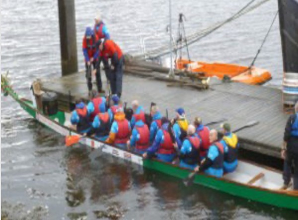
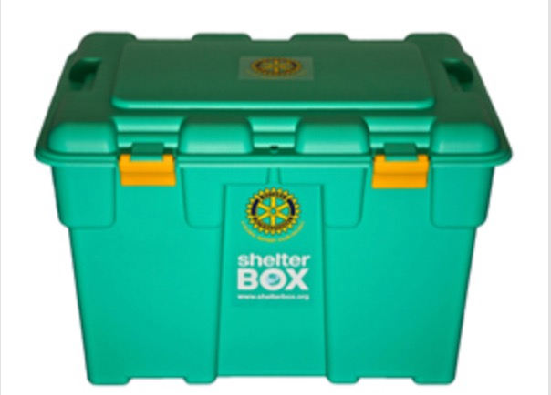
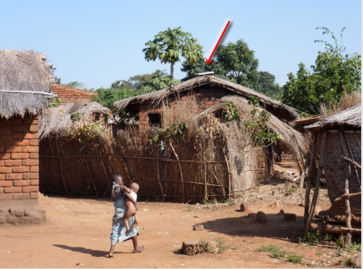

Past Projects

Dragon Boat

Two years in a row, we had a twelve-man team perform in the Dragon Boat race at Irvine Harbour, with members being sponsored by the public. We raised several thousand pounds for Mary's Meals and 500 Miles Charity.
The dragon boats are provided by the organisers of the event, and heats are held, culminating in the final. Great fun and a fine way to raise funds along with some good community spirit.
Shelter Box

Shelter Box was a major project for the Rotary Club of Ayr for several years, however we felt unhappy about the fact that Shelter Box UK could no longer provide tracking information on the location of boxes we had funded. We then started supporting Aquabox.
Shelter Box is an excellent idea with boxes being deployed to disaster-struck areas around the world, and we were able to fund over 90 boxes, at a cost of £54,000, thanks to our dedicated team, who delivered presentations to local schools, churches and other organisations.
Malawi Solar

We embarked on a huge fund-raising exercise to provide solar panels to a village in Malawi. Led by member Muir Austin, we were able to attract match funding from Rotary District to enable a £50,000 project to go ahead, using a local Rotary club in Limbe.
Much of our funding came from book sales income, following author and member Jimmy Begg's decision to allocate all profits to overseas aid from his excellent Ayrshire Coastal Path guide book.
Muir and Neil Beattie subsequently visited the village in Malawi and were moved by the difference providing light and power could make to the residents, especially children, who are now able to attend school and use equipment such as computers.